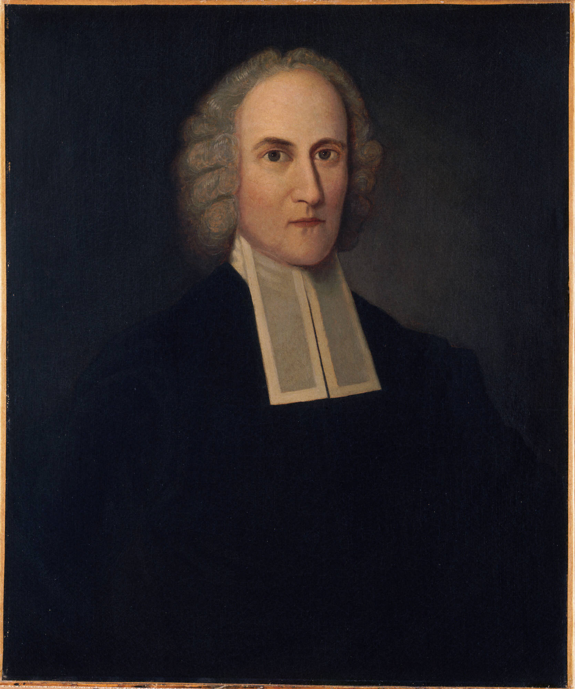

Directions: Fill in the chart as we study each stage of the record. Keep this page in your notebook. You will use it again on the review day before the unit test.

| Stage | What happened | The problem or claim | Evidence or result |
|---|---|---|---|
| Assemblies and neglect | |||
| Print on trial, 1735 | |||
| The household | |||
| Edwards and revival, 1734 to 1741 | |||
| Whitefield and the two currents |
The training in one sentence. Finish this sentence in your own words, using at least two rows of the chart as evidence. Colonists learned to judge authority for themselves because...
| Stage | What happened | The problem or claim | Evidence or result |
|---|---|---|---|
| Assemblies and neglect | Every colony had an elected assembly voting taxes, laws, and the governor's salary, while Britain attended to wars and politics in Europe. | On paper the appointed governor held the stronger hand. In practice the assembly held the money. | Assemblies used the power of the purse decade by decade to claim a larger share of governing. Burke later named the British practice salutary neglect. |
| Print on trial, 1735 | Printer John Peter Zenger was jailed for seditious libel after his newspaper attacked Governor Cosby, and tried in New York in August 1735. | Under the law, truth was no defense. His lawyer Andrew Hamilton argued that true statements could not be libel. | The jury acquitted against the judge's instruction. The verdict changed no law, and it became the colonies' landmark for press freedom in practice and in memory. |
| The household | Households held couples, children, apprentices, servants, and enslaved people under one legal head, and did most of the colony's work. | Coverture covered a wife's legal identity with her husband's, while women worked, traded, and taught, and widows regained legal standing. | Children worked young and apprenticed out. Enslaved people built families and kept African faiths and skills inside an order that treated them as property. |
| Edwards and revival, 1734 to 1741 | A revival filled Edwards's Northampton in 1734 and 1735, and his sermon Sinners in the Hands of an Angry God was preached at Enfield in July 1741. | Edwards taught that nothing but God's pleasure kept sinners out of hell, against hearers who trusted their health, prudence, and religious record. | Congregations wept and cried out. Congregations split between Old Lights, who charged disorder, and New Lights, who answered that a faith nobody felt was no faith at all. |
| Whitefield and the two currents | Whitefield toured from Georgia to New England in 1739 and 1740, preaching in churches and in the open air to crowds in the thousands, carried by newspaper print. | Hearers judged rival preachers for themselves while, beside the revival, the Enlightenment prized reason and observation over inherited authority. | Baptists and Methodists multiplied, Black hearers formed churches of their own, and colonists practiced judging authority in the pulpit, in print, and in the assembly. |
The training in one sentence. Strong answers join a government fact to a religion or print fact from two rows. Colonists governed themselves yearly through assemblies Britain neglected, watched a jury refuse a governor's prosecution without changing any law, and sat under preachers who told them to judge their own state and choose between rival messages, so judging authority was a practiced habit long before it became a political program.